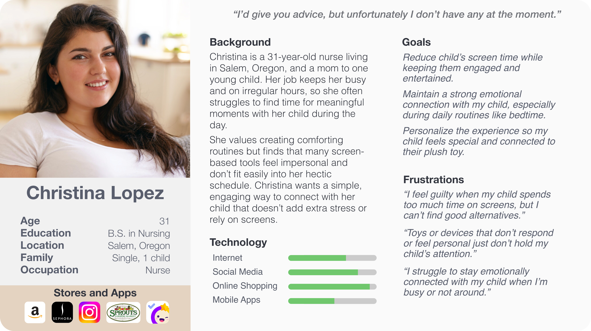
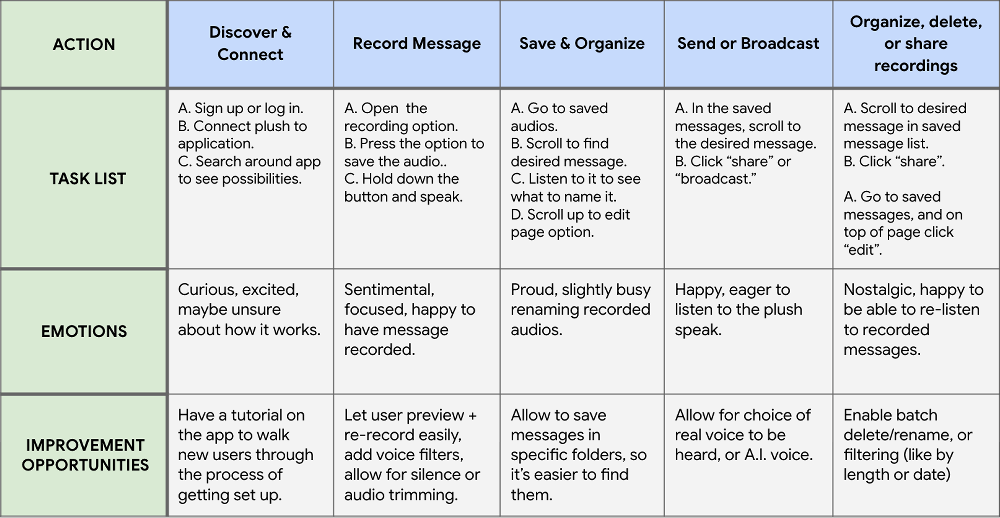

Magical Mates
Un compañero mágico para cuentos, rutinas y mensajes de voz.
Producto: Magical Mates es un peluche inteligente y una app que ayuda a los niños a establecer rutinas y a estimular su imaginación. Los padres usan la app para enviar mensajes de voz e historias, que se entregan a través del peluche usando audio generado por inteligencia artificial.
Problema: Los padres quieren limitar el uso de pantallas en sus hijos, al tiempo que se mantienen conectados y fomentan hábitos saludables. La mayoría de las herramientas carecen de calidez emocional o juego imaginativo.
Meta: Crear una experiencia mágica, sin pantallas, que ayude a las familias a mantenerse conectadas, establecer rutinas y fomentar la imaginación a través de peluches inteligentes con voz integrada.
Herramientas Figma, Adobe, Photopea
Plazo 3 semanas
Rol Investigación, Branding, Diseño UX/UI, Prototipado, Pruebas de usabilidad

Empatizar
Entender el problema y el usuario
Antes de realizar la investigación
Supuse que los padres querían que sus hijos tuvieran una forma de mantenerse conectados con ellos sin necesidad de pantallas y que les ayudara a establecer rutinas con más facilidad.
A través de entrevistas con usuarios y observación
Confirmé que muchas personas tenían dificultades para equilibrar sus agendas ocupadas con momentos de conexión de calidad. Una madre de un niño de cinco años compartió lo difícil que le resultaba mantener una rutina constante a la hora de dormir cuando tenía turnos de trabajo nocturnos. Ella deseaba una presencia reconfortante y familiar en la que su hijo pudiera confiar cuando ella no estuviera.
Al hablar con padres e hijos
Descubrí que la conexión emocional era tan importante como la estructura. Los padres valoraban las herramientas que ayudaban con las rutinas, y los niños respondían mejor a interacciones que se sintieran personales y tuvieran un toque de magia.
Testimonios de usuarios
"Solo quiero que mi hija sienta que estoy con ella, incluso cuando no puedo estar en casa a la hora de dormir."
— Madre de una niña de cinco años
"Mi hijo escucha mucho mejor cuando el mensaje viene de un personaje que él ama. Si se siente como un juego, no le parece una rutina.
— Padre de un niño de cuatro años
"Mami está demasiado ocupada para decir buenas noches."
— Niño, 6 años
Puntos de dolor
Tiempo de pantalla: Los padres quieren reducir el tiempo que sus hijos pasan frente a las pantallas, pero les cuesta encontrar alternativas atractivas y sin pantalla que a la vez fomenten la conexión humana.
Impersonalidad: Las herramientas actuales para rutinas e historias se sienten impersonales y carecen de calidez emocional o juego imaginativo.
Aburrimiento: Los niños pierden interés en juguetes o apps estáticas que no se sienten “vivas” ni personalizadas para ellos.
Puntos claves
Conexión emocional: Los padres priorizan mantener vínculos íntimos con sus hijos a pesar de las agendas ocupadas, buscando herramientas que preserven la calidez de la interacción personal.
Rutinas a través del juego: Los niños responden mejor a la estructura cuando se presenta mediante experiencias imaginativas y protagonizadas por personajes, en lugar de instrucciones directas.
Definir
Enmarcar el problema
A través de la investigación y entrevistas, surgió un desafío común: los padres ocupados tienen dificultades para mantener rutinas reconfortantes y una conexión significativa con sus hijos, mientras que los niños extrañan interacciones constantes y atractivas. Los padres desean reducir el tiempo frente a pantallas, pero carecen de herramientas que aporten calidez emocional y momentos lúdicos y personalizados en la vida diaria. El reto de diseño es crear una solución atractiva y fácil de usar que apoye rutinas nutritivas sin pantallas y ayude a los padres a mantenerse conectados con sus hijos, incluso cuando están separados.
Desarrollo de la persona
De las entrevistas con usuarios, quedó claro que los padres ocupados tienen dificultades para mantener rutinas reconfortantes mientras manejan agendas agitadas. Christina, una enfermera y madre de una niña de cinco años, inspiró la creación de la persona. Ella equilibra turnos nocturnos y tiempo en familia, y desea que su hija tenga una presencia familiar y reconfortante que apoye las rutinas diarias. Valora soluciones simples y sin pantallas que le ayuden a mantenerse conectada y faciliten las rutinas sin añadir complejidad.

Mapping the user journey
Looking at the journey, it’s clear that parents like Christina juggle busy schedules while wanting meaningful, screen-free connections with their children. From recording, saving, and broadcasting messages, to creating and sharing AI-generated stories, the process supports comforting routines.
Whether it’s leaving a goodnight message after a late shift or sharing a silly story before school, these tools offer families like Christina’s a way to stay emotionally present, even when physically apart, building connection through consistency, creativity, and care.

Ideate
Paper Wireframes
When I started sketching, my goal was to get many ideas down, so I created a few versions of each page. Then, I highlighted certain elements on each page and combined them into a refined concept. The accompanying figure shows this process for the incorporated Favorite Audios page.

Digital Wireframes
After building the high-fidelity prototype, I tested it with users to evaluate how well two main flows (broadcasting a message, and creating or broadcasting a story) functioned in practice. I observed participants, noting where the structure supported their expectations and where it caused confusion. Feedback showed that much of the functionality felt intuitive, and one participant noted how design choices like color reinforced clarity. Additional feedback helped polish and refine the final prototype.

Prototype
Low-Fidelity Prototype
After finalizing the wireframes, I started linking everything together in Figma to map out the main user flow. I focused on the checkout process: how someone would add something to their cart and actually complete an order. It was a simple way to test how the screens worked together and whether the flow made sense before moving on to any visuals or details. While building the low-fidelity prototype, I focused on keeping the layout simple and the navigation clear, making sure all the key screens connected logically. Since the design was still basic, I concentrated on structure and user flow rather than visuals or detailed content, which helped keep the focus on functionality first.


High-Fidelity Prototype
When creating the high-fidelity prototype, I built on everything I learned from the low-fidelity version and the usability feedback it generated. I revisited each screen with fresh eyes, making changes to the flow, visuals, and microcopy. I incorporated real images, colors, and branding elements, and added more visual hierarchy to key elements. The high-fidelity prototype became a more realistic version of the final product, allowing me to test not just functionality, but how the design felt in a real-world context.

Test
Sample Improvements from User Feedback
Recently Played Stories
After conducting a few usability studies, I noticed that users wanted an easy way to return to stories they had just listened to. In response, I added a “Recently Played” section to the Storytime page. This change allows users to quickly access their most recent stories without needing to search again, making the experience feel more fluid and user-friendly.
Enhanced Saved Messages Functionality
During testing, it became clear that users wanted more flexibility when interacting with their saved recordings. I updated the Saved Messages page to include the ability to play a message directly from the list, as well as a new “Share” option. These additions made it easier for users to engage with their own content and share it with others, reducing friction and increasing overall usability.

Conclusion
Final Thoughts
Reflecting on the process, I learned a lot more about Figma than I expected, especially how to use overlays and build more advanced interactions in the prototype. I also improved my icon design skills, learning how to create custom icons that matched the tone of the app. Lastly, I also gained a better sense of how to balance creativity with usability, making sure every design choice served a clear purpose. These small details ended up having a big impact on how polished and intuitive the final product felt.
Accessibility Considerations
High Contrast Colors: Ensured all color choices met WCAG contrast ratio guidelines to support users with visual impairments and enhance readability.
Readable & Reachable: Used large text and generously sized buttons to improve navigation for users with visual impairments or motor challenges.
Message Captions: Added captions for all recorded messages, so users with hearing difficulties can still engage with the app’s core features.